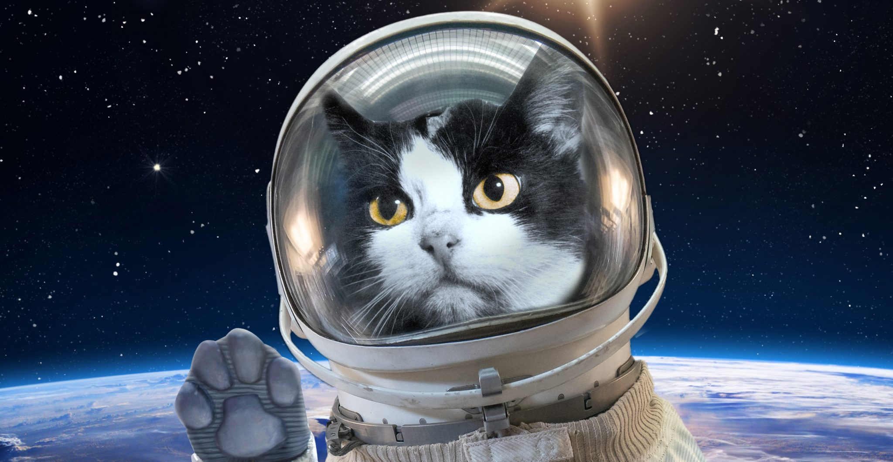
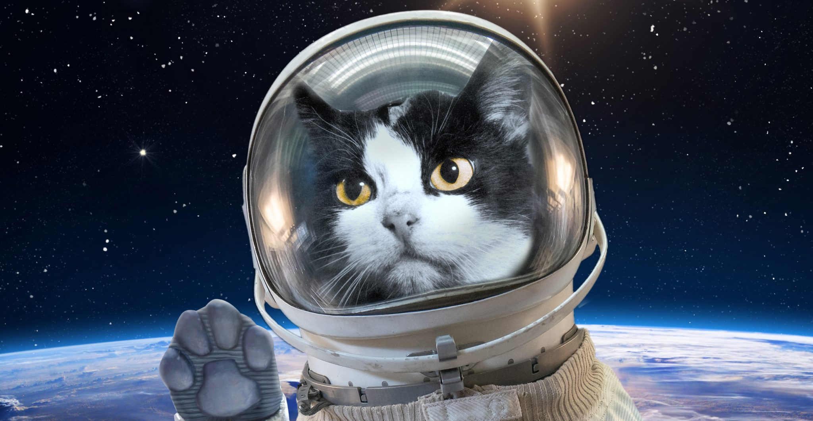

Hiss-torically Fa-meow-s Cats
This site is dedicated to honoring cats who made an impact
“I have studied many philosophers and many cats. The wisdom of cats is infinitely superior.”
-William Shakespeare
This site is dedicated to honoring cats who made an impact
“I have studied many philosophers and many cats. The wisdom of cats is infinitely superior.”
-William Shakespeare
Félicette, the first cat to fly into space in October 1963, is seen her carrier pre-flight. Chosen by scientists out of a trainee class of 13 other cat-stronaut hopefuls, Félicette was loaded into the nose cone of a French Veronique sounding rocket in Algeria, and sent soaring 97 miles (156 kilometers) above the Earth.
During the mission, which lasted less than 15 minutes from launch to touchdown, Félicette was subjected to forces up to 9.5 times the normal pull of gravity and became the first and perhaps only cat to experience the weightlessness of space.
Félicette's trip came the same year as the U.S. and former Soviet Union completed their respective first programs to launch astronauts and cosmonauts into Earth orbit. Unlike her fellow 1963 space travelers though, Félicette lifted off with electrodes implanted in her skull to monitor her brain's reaction to the environment and rigors of spaceflight.
In the spring of 1941, the Bismarck, a German battleship, set sail towards the North Atlantic, tasked with the duty to "attack the vast naval convoys" that carried important supplies from North America to Great Britain. As the story goes, after viciously fighting for three days, the Bismarck was finally defeated, with only a few crewmembers surviving — including one lucky cat.
The Bismarck's black and white kitty, Oscar, was brought on board the opposing ship, the HMS Cossack, and renamed Unsinkable Sam. His new name was appropriate for him, as a mere five months into sailing with the Cossack, the ship was sunk by a German submarine, with Sam miraculously surviving yet again. He was then taken aboard the HMS Ark Royal, where Sam truly tested how many of his lives he had left and got away from yet another torpedoing, finally slinking onto the HMS Legion. It seems that authorities finally took pity on poor Sam and brought him to shore so he could retire from his naval career.
As revealed by the BBC, in 2004, a Texan woman by the name of Julie paid an astonishing $50,000 to clone her 17-year-old cat, Nicky, who had died the previous year. Giving her furry companion's DNA to California-based company Genetic Savings and Clone, Julie claimed that the clone, Little Nicky, a Maine coon kitten, looked identical to her dead cat. "I have not been able to see one difference," she claimed to the Los Angeles Times. What's more, the kitten seemed to share similar personality traits. "Little Nicky loves water, like Nicky did, and he's already jumped into the bathtub like Nicky used to do."
According to the Los Angeles Times, Little Nicky is the fourth feline that the biotech company has successfully cloned. The innovation has sparked criticism amongst animal rights activists, with Michael Mountain, president of Best Friends Animal Society, declaring to the outlet, "You're dealing with a Dr. Frankenstein situation."